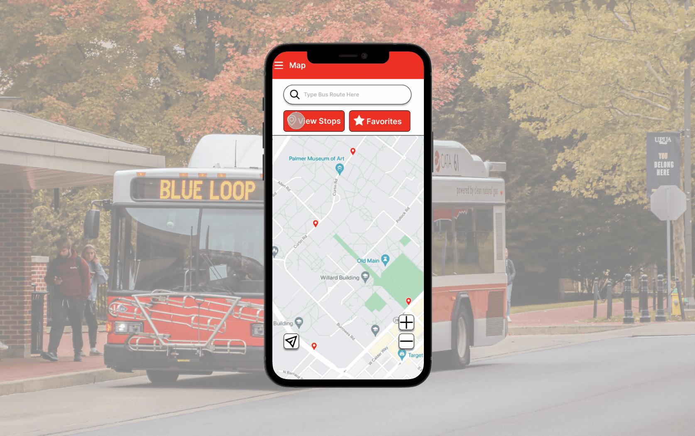

CATA Bus: Mobile App Redesign
As of 2019, a total of 338,000 Pennsylvania residents relied on public transit as their primary mode of commuting. Fast forward to 2022, and we witness a remarkable year-over-year surge of approximately 39 percent in transit usage.
While pursuing my university studies, I had the privilege of being part of a new product team tasked with revamping the user experience for a rapidly expanding industry.

In adherence to the terms of my confidentiality agreement, certain proprietary details have been excluded from the provided case study.
My Role
During my two-year internship, I collaborated within a dynamic Design team comprising four individuals. This close-knit group included a designer, two developers, and a senior marketer, with whom I worked closely to achieve our objectives.
My internship concluded upon the successful launch of the application, allowing me to take part in the entire lifecycle of the project from inception to completion.
Learning The Service
Making My Checklist
Upon joining CATA design team, I had the challenge to understand the current situation with the mobile application. After some brief research I found that the current application suffers from frequent crashes causing unreliable bus information and many hidden features, which has led to a significant 62% decrease in user downloads for the original CATA application. Additionally, it has garnered a dismal customer rating of 1.7 out of 5.0 on the App Store, highlighting the dissatisfaction among users with its performance and usability.
• • •
Following discussions with key stakeholders, it has been identified that the CATA Bus app should focus on the following key features:
1). Real-time Bus Tracking: Implement functionality that allows users to track the location of buses in real-time. This will enable users to plan their journeys more effectively by knowing the exact whereabouts of their bus.
2). Alerts and Notifications: Incorporate a system for delivering alerts and notifications to users regarding delays, cancellations, or changes in bus schedules. This feature will empower users to adjust their travel plans accordingly, minimizing inconvenience and disruptions.
Learning The Users
Meet & Greet
In order to appropriately enhance the user experience I wanted to know precisely what our users thought of the application and what they wanted us to add. So instead of starting with user personas and surveys I went out.
Venturing out to bus stops, I engaged in meaningful conversations with diverse groups of individuals. Eight generous people graciously shared their time, enabling me to uncover their unique needs and desires. Drawing from these interactions, I swiftly crafted a paper prototype, poised to gather additional feedback from several more cohorts. In total, I conversed with 11 students, 3 faculty members, and 6 visitors.
Guiding participants through our current CATA application, I tasked them with finding specific features while encouraging them to vocalize their assumptions. This exercise unearthed a plethora of insights, as I diligently recorded their pain points and conjectures.
•80% of users preferred the landing page to be displayed as a map view
•55% of users expressed wanting a section for favorite routes and bus schedules.
•35% agree there should be an easily accessible method to reach the bus schedule feature
Discovery + Iterations
Where's My Bus?
To guarantee that my designs would be both impactful and meaningful, I decided to take some notes about our currently live app.
In reviewing the current iteration of the app, I observed several graphical anomalies in the top bar, along with crucial information gaps for riders within the bus list and bus stop location sections. These deficiencies were flagged with an orange icon for further attention.

From my field notes and observations of my interviews I started to redesign our landing page of the mobile app by adding several new features;
1. Favorite pill menu - allows users to easily switch between different bus routes.
2. Visual Representation of the bus path - create visually accessible graphic to assist riders when deciding a bus stop.
3. Bus Stop Information - added a pop-out to give more information about the specific bus stop riders choose.

In order to gain appropriate feedback from our end-users, I created a survey to gather data to identify trends the riders enjoy and dislike on the newest mock-up of the app. I received 83 responses. I then classified the data into the several meaningful groups.
"The added bus path is great, but I want more information about each stop."
"The layout looks cool, but I think there are too many colors for what is needed."
"The design is improved, though, there should be easier ways to get information (bus stops) quickly."
Final Design
Ticket To Ride
Following multiple feedback loops, design iterations, and AB testing, I finalized the designs. I decided to change the application's color from blue to red to match the company's logo color. Based off of the rider's feedback, I added several key features, including, a search bar, bus stop details, and a favorite route menu.
The search bar was implemented for riders to quickly find the bus route or choose from the recently searched list. It was ultimately decided to keep the search bar at the top of the app instead of the bottom third because 48% of the student riders were more familiar with similar features in similar applications.

To address the initial confusion with the application, I've developed a comprehensive pop-up feature tailored specifically for accessing bus stop information. This pop-up closely resembles the traditional bus schedules displayed at each stop, providing riders with a familiar interface. The aim is to assist passengers of all ages in quickly locating and interpreting relevant information without the need for extensive relearning. By streamlining the process, riders can focus on catching their bus with ease, rather than grappling with the intricacies of an app.
Recognizing the significant international presence at Penn State, with over 10% of the student body being international, I made it a priority to enhance the accessibility of our application. As part of this effort, I incorporated a comprehensive settings menu, empowering users to easily switch between units, including the option to convert measurements to metric.
Impact
Ride To The Moon
We launched the application after extensive A/B testing and user interviews via usertesting.com. Over this two week period, my team saw around 60% of participants picking the newer iteration of the application over the original. This gave my team the confidence to have our redesign go live.
Over the next 4 months my team and witnessed incredible statistics;
•42% increased user downloads
•80% of Penn State Students switched from third party apps to CATA's official app
•32% Decreased in user reports of inaccurate data
All of these statistics proved to my team and myself that our redesign had positive impacts to the user experience of the everyday rider.
Reflections
Final Destination
Navigating through a four-semester-long internship, I encountered a series of challenging situations, particularly as this marked my inaugural venture into the realm of UX design beyond the confines of academia. Having a lot of theoretical knowledge from my studies, I was eager to apply these principles to a live project. However, the transition from theory to practice proved to be more difficult than I had anticipated, presenting me with a many roadblocks and invaluable learning opportunities.
One of the most significant challenges I faced at the outset was grappling with imposter syndrome, a common phenomenon among newcomers to any field. As I delved into the intricacies of real-world UX design, I couldn't shake the feeling of inadequacy and self-doubt, questioning whether I truly belonged in this professional environment. Overcoming this internal barrier required much effort to acknowledge my achievements and embrace the learning journey ahead, rather than succumbing to feelings of unworthiness.
Communication issues also emerged as a recurring challenge, particularly within the context of team dynamics. Collaborating with diverse individuals with varying backgrounds and perspectives necessitated effective communication and collaboration. However, miscommunications and misunderstandings occasionally arose, leading to friction and discord within the team. Addressing these communication challenges required patience, empathy, and a willingness to actively listen and engage with my colleagues to foster a more cohesive and productive working environment.
Furthermore, I grappled with the tendency to rely on assumptions rather than grounding my decisions in empirical data. As a novice UX designer, I often found myself jumping to conclusions or making design choices based on intuition rather than conducting thorough research and analysis. Recognizing the limitations of this approach, I endeavored to create a more data-driven mindset, prioritizing user research and usability testing to inform my design decisions effectively.
In hindsight, these challenges, though difficult at the time, served as invaluable learning experiences that ultimately shaped me into a more resilient, adaptable, and empathetic designer. By confronting imposter syndrome head-on, fostering open and transparent communication within the team, and prioritizing data-driven decision-making, I emerged from my internship with newfound confidence and a deeper understanding of the complexities of UX design in practice.